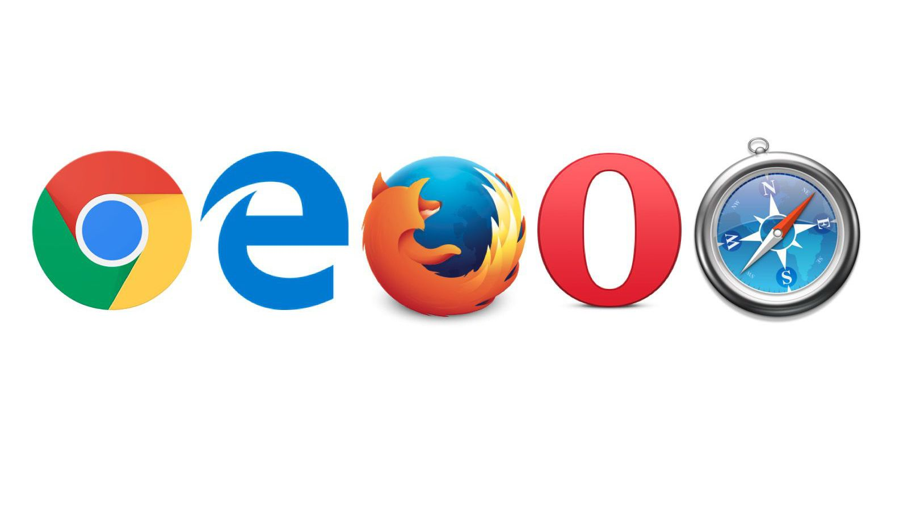

Un navegador web (en inglés, web browser) es un software, aplicación o programa que permite el acceso a la Web, interpretando la información de distintos tipos de archivos y sitios web para que estos puedan ser visualizados.
La funcionalidad básica de un navegador web es permitir la visualización de documentos de texto, posiblemente con recursos multimedia incrustados. Además, permite visitar páginas web y hacer actividades en ella, es decir, enlazar un sitio con otro, imprimir, enviar y recibir correo, entre otras funcionalidades más.
Los documentos que se muestran en un navegador pueden estar ubicados:
Tales documentos, comúnmente denominados páginas web, poseen hiperenlaces o hipervínculos que enlazan una porción de texto o una imagen a otro documento, normalmente relacionado con el texto o la imagen.
El seguimiento de enlaces de una página a otra, ubicada en cualquier computadora conectada a Internet, se llama navegación, de donde se origina el nombre navegador (aplicado tanto para el programa como para la persona que lo utiliza, a la cual también se le llama cibernauta). Por otro lado, hojeador es una traducción literal del original en inglés, browser, aunque su uso es minoritario.
 Principales navegadores